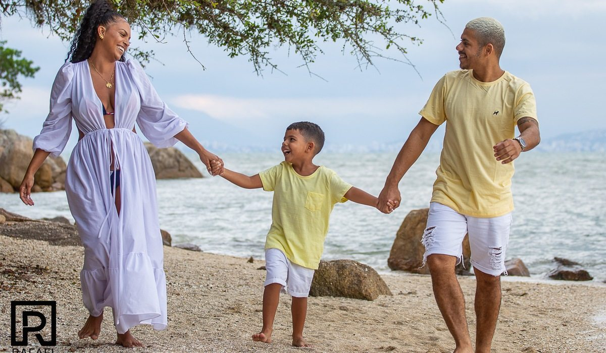
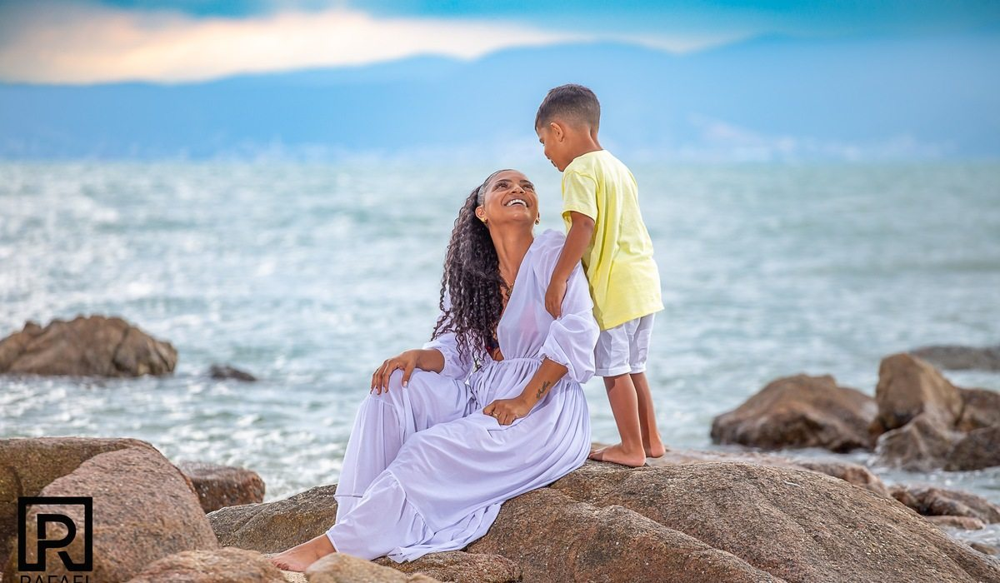

Famílias e retratos
Explore os registros deste ensaio. Clique em uma fotografia para visualizá-la em tamanho maior.


Explore os registros deste ensaio. Clique em uma fotografia para visualizá-la em tamanho maior.

